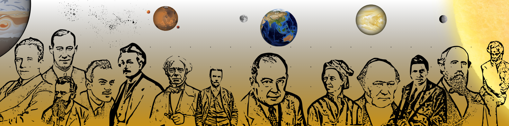

Hi, I’m Roshan Raj, a physics student exploring quantum information, quantum optics, open quantum systems and the ideas connecting fundamental physics with emerging quantum computing technologies. You can find my academic CV here.